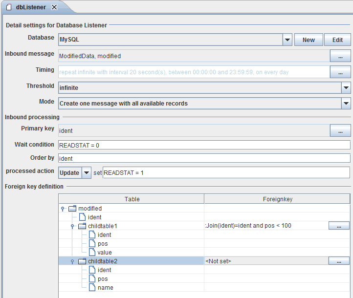
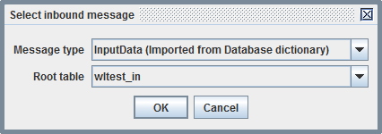
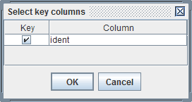

Database Listener

Topic content
Description
The Database Listener is an inbound channel which scans a database table for records matching certain conditions.
Whenever records are found matching the search condition, the records are read and their content is returned from the channel as structured message. The recognized records then are marked as read by setting a flag on a column to avoid that the records are processed a second time.
Purpose of object
The Database Listener serves as means to start a process model whenever the content of a database table changes.
Creation
To create a Database Listener follow the steps described in the general description of Channels
Configuration
The dialog to configure the Database Listener looks like:

Step by Step
•Database The selected database connection.
•Inbound Message the Message type representing the table and possible dependent child tables of the database. Click on the button denoted by three dots to open a dialog where you can select a message type and the Root table of that structure. Only Message types which are imported from the database are selectable.

The channel regularly selects the Root table to search for records which fulfill the Wait condition.
•Threshold The maximum number of records which are read at once within a polling interval. You can select 1, 10, 50, 100, 250 and infinite here.
•Mode There are two working mode which you can select here: One message per record or Create one message with all available records.
•Primary key The columns of the Root table identifying a record. Click on the button denoted by three dots to open a dialog where you can select the columns which together form the unique key.

•Wait condition A SQL condition used in the where part of the polling statement to select the columns to read. Typically Wait condition and a processed action are complementary. In the example above the Wait condition is READSTAT = 0 and the processed action READSTAT = 1.
•Order by a list of column names of the Root table defining the order of the result. Because this is simply added to the generated SQL statement to select the Root table, you can add the key words ASC or DESC to the column list.
•processed action You may select either Delete or Update here. If you select Update you must enter an Update action like <columnname = <value>
•Timing
•Foreign key definition In this panel the user has to define the relationship between a parent table (e.g. the RootTable) and its details. You have to click on the buttons denoted by three dots to open a dialog where the foreign key relationship has to be defined.
Dialog to edit a foreign key relationship
A foreign key is a reference to a primary key on the referenced table, so a foreign key can consist of several columns. In this dialog you can add all the columns which are part of the foreign key and the related columns of the references primary key.
You also may add an optional where condition to constrain the records selected from the detail table.
See also
Use the Database Target or the Database outbound channel to write data to a database.
Use the Outbound channels Database Reader, Database Source Reader or the Database outbound channel to read data from a database.